The Git Repository and Github
Git is a Version Control System (VCS) for keeping track of changes in files. It was open-sourced in 2005 by Linus Torvald to aid in the development of Linux. Using Git:
You can take snapshots, or versions, of your files at any time by creating a commit.
File changes can be reverted back to previous versions.
It’s a distributed system meaning that that the repository exists on multiple computers. You can, therefore, have both local and remote versions of your files.
Other users can clone the repository, which gives them a local version of it that they can work on independently. Therefore, you can have an entire development team working on the same project.
If you are on Windows you may need to download git bash and git GUI from the following URL: Git for Windows
The following sections will step through the process of creating a repository, committing code and pushing it to a remote repository on GitHub. First, we’ll look at how to do this at the command line (with git Bash) and then within VSCode.
Git Vocabulary
Git revolves around several core data structures and commands:
Repository: the data structure of your code, including a .git folder in the root directory
Commit: a particular saved state of the repository, which includes all files and additions
Branch: a means of grouping a set of commits. Each branch has a unique history. This is primarily used for separating development and stable branches.
Push: update the remote repository with your local changes
Pull: update your local repository with the remote changes
Clone: retrieve a local copy of a repository to modify
Fork: duplicate a pre-existing repository to modify, and to compare against the original
Merge: combine various changes from different branches/commits/forks into a single history
Git Structure
Git stores your projects in a repository. A Git repository is a data structure containing the structure, history, and files of a project. Git repositories usually consist of:
A .git folder. This folder contains the various information about the repository.
A .gitignore file. This file contains the files or directories that you do not want included when you commit.
Files and folders. This is the main content of the repository.
- Git Repositories are normally physically located at GitHub. What is GitHub?
GitHub is a cloud-based platform that hosts Git repositories, making it easy for developers to store, manage, and collaborate on code. It acts as a social network for developers, enabling them to share their work, collaborate on projects, and review each other’s code. GitHub simplifies the process of code management and collaboration, making it a popular choice for both open-source and private projects.
Repositories hosted at GitHub can be cloned (copied) to a local computer. Changes can be made on the local computer and when completed and tested, the changes can be bundled together into a commit, and commits can be pushed up to the Github hosted repository. This distributed system allows many developers to work on the same code simultaneously and provides a disaster recovery capability (in case one of the local computers is eaten by your dog, along with your homework!) as the source code is stored in the cloud.
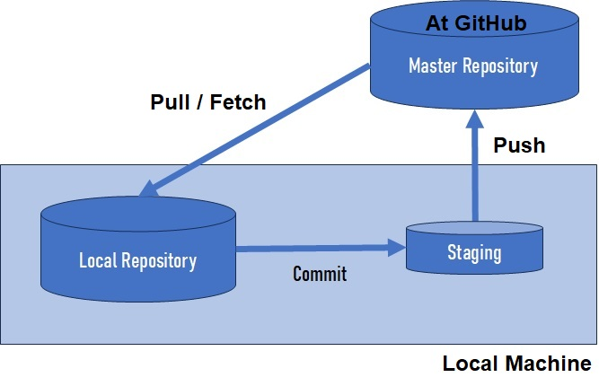The subsequent sections will drill down further into how the team uses github.
Initializing the Local Repository
Command Line
We will start by creating somewhere to hold All your project files. Let’s create a new directory (folder) to hold your projects. Let’s call is something really excitin like Projects. Open the DOS Command (cmd) window and enter the following:
mkdir C:\Projects
We add it to the root directory (folder). This should make it easy to find.
Next, lets create a project folder in our new Projects folder. Again, we’ll call it something creative, like MyProject and put it into a familiar src folder. (Normally, you see Java code in the source directory so this is normally how it would look.) In your open DOS command window enter the following:
mkdir C:\Projects\MyProject
cd C:\Projects\MyProject
mkdir src
cd src
Now, let’s put something in our new MyProject folder. Let’s create a new Java class using the NotePad editor and enter the following lines:
In Notepad, create MyProject.java in the c:ProjectsMyProjectsrc folder, enter the lines below and remember to save it!
class MyProject {
public static void main(String[] args) {
System.out.println("Hello from MyProject");
}
}
Now let’s take our new project (MyProject with a single class) and initialize it for use with git. Go back into your DOS CMD window:
git init
You should see the following response:
Initialized empty Git repository in /Projects/MyProject/.git/
You will see a new directory under the project folder.
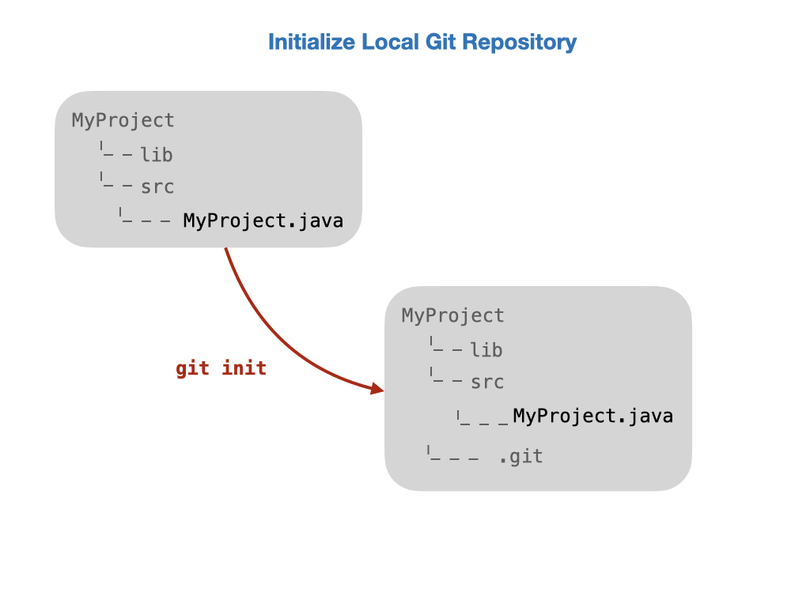VS Code
You can also initialize a repository in VSCode. This is usually done after you have created a new project as detailed in Creating a New WPILib Project. Click on Initialize Repository then Stage and Commit your changes. You now have a local repostitory on your PC. See a more detailed overview of Staging and Committing below.
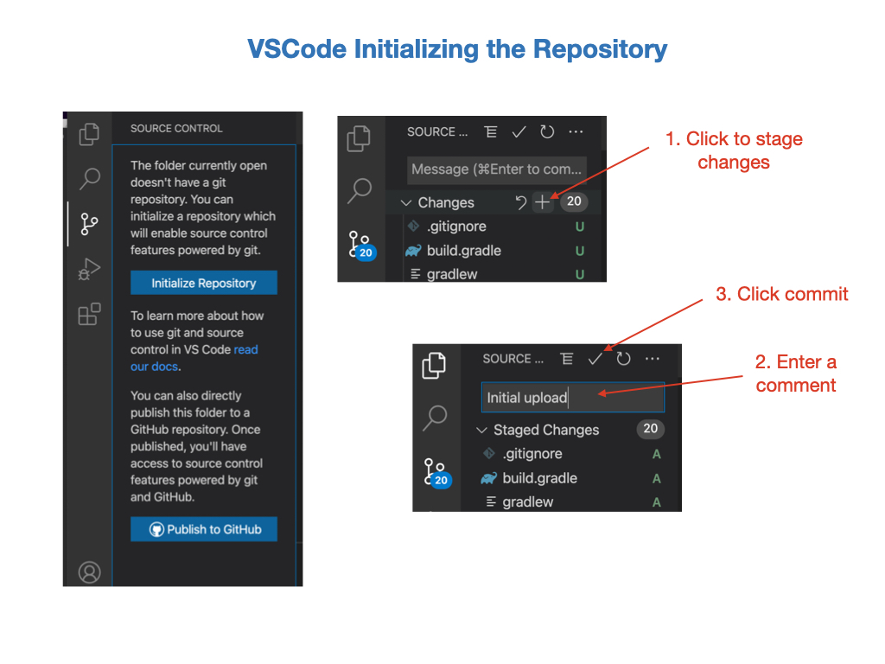Configuring Username and Email
Before continuing with Git you’ll want to do a few things to customize your Git environment. You should only have to do these things only once on any given computer. You can also change them at any time by running through the commands again.
Git comes with a tool called git config that lets you get and set configuration variables that control all aspects of how Git looks and operates.
The first thing you should do when you install Git is to set your user name and email address. This is important because every Git commit uses this information, and it’s immutably baked into the commits you start creating:
git config --global user.name 'John Doe'
git config --global user.email johndoe@example.com
To view your configuration you can use:
git config --list
These configuration variables are stored in the .gitconfig file that can be found in your HOME directory.
Hiding Email Address
If you don’t want to expose your GitHub email address in the commit logs you can hide your email address. In GitHub go to Settings – Email – Keep my email address private.
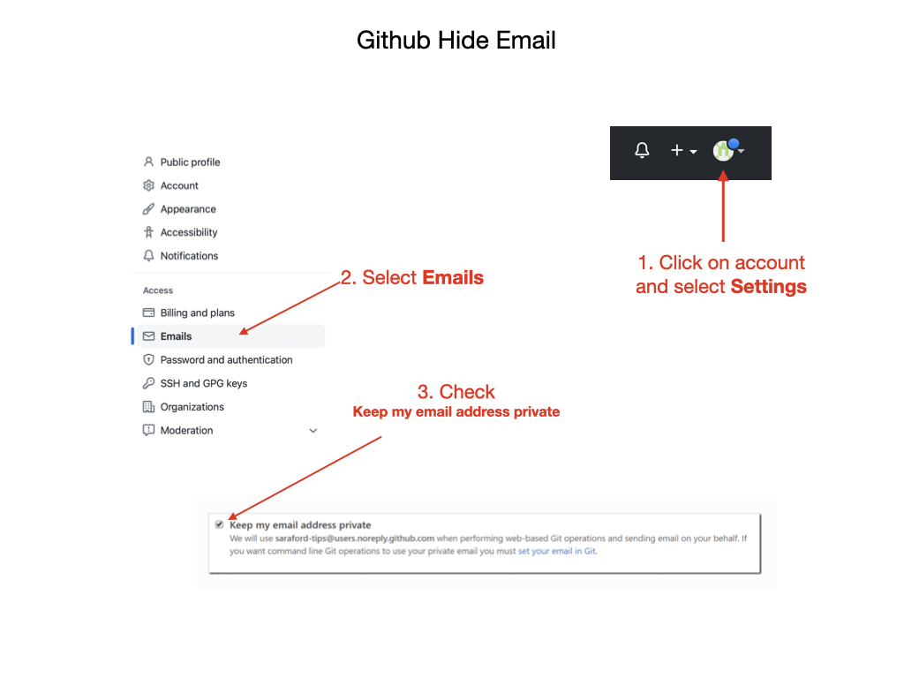You’ll notice a new email address <username>@users.noreply.github.com for you to use for your Git commits.
Next, you’ll need to update Git to use this new noreply email instead of your real one. From the command line, type:
git config global user.email “<username>@users.noreply.github.com”
Note
Where <username> is your Git User ID.
This will change your email address globally across all repositories. To verify, type
git config --global user.email
Staging and Committing
Command Line
Now that we have initialized and configured the repository we can now stage and commit our files. We’re going to move our files to a staging area in preparation for a commit to the repository.
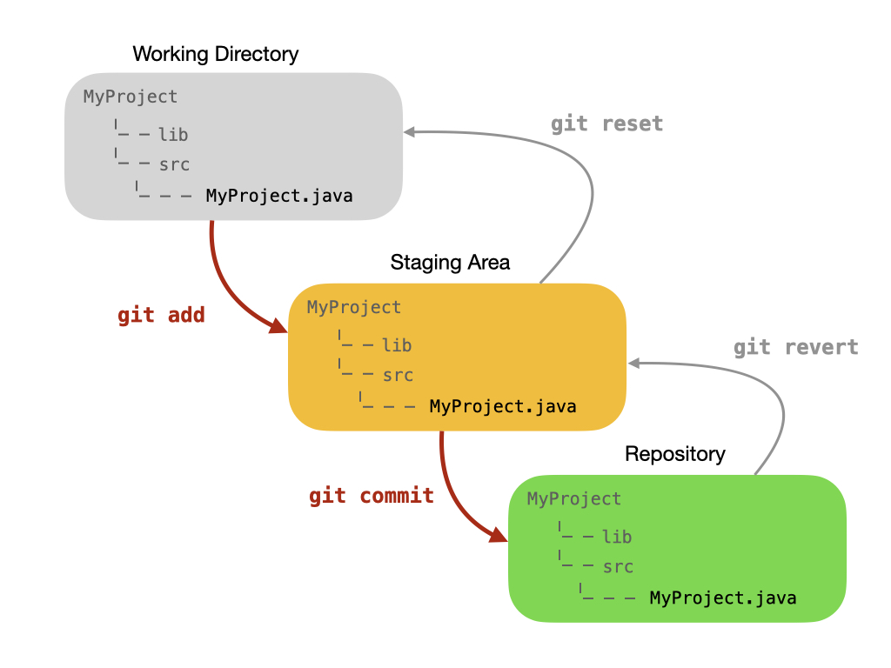First, let’s get a status from Git by typing the following command:
git status
Now let’s review the output:
On branch master
No commits yet
Untracked files:
(use "git add <file>..." to include in what will be committed)
src/
nothing added to commit but untracked files present (use "git add" to track)
The output is telling us that we are on the main branch, we’ll look at branches later, and that there have been no commits. It also lists the untracked files. These are files that have not yet been added to Gits’ staging area. Let’s do that now:
git add
After the add command, here is the response:
On branch master
No commits yet
Changes to be committed:
(use "git rm --cached <file>..." to unstage)
new file: src/MyProject.java
Our files are now in the staging area and are ready to be committed to the repository:
git commit -m "Initial commit"
And here is the response:
[master (root-commit) 8877fba] Initial commit
1 file changed, 5 insertions(+)
create mode 100644 src/MyProject.java
The output tells us that this is the initial commit to the repository and lists the files that have been committed.
Note
The value 8877fba is the last few characters of a unique commit tag. It might be different for your commit.
We can always see what status the Git repository is in by typing:
git status
And the response:
On branch master
nothing to commit, working tree clean
We now have no new files to commit. It’s telling us that our working directory is clean.
VS Code
The previous process can be done in VSCode by carrying out the steps in the following diagram.
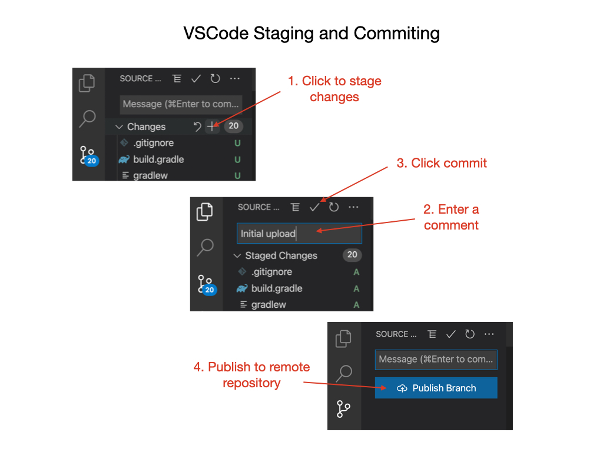Pushing to the Remote Repository
Command Line
Before we can push code to our GitHub account we need to login and create a repository. Click on the + (plus) icon at the top of the your Github home page and select “Create a Repository”.
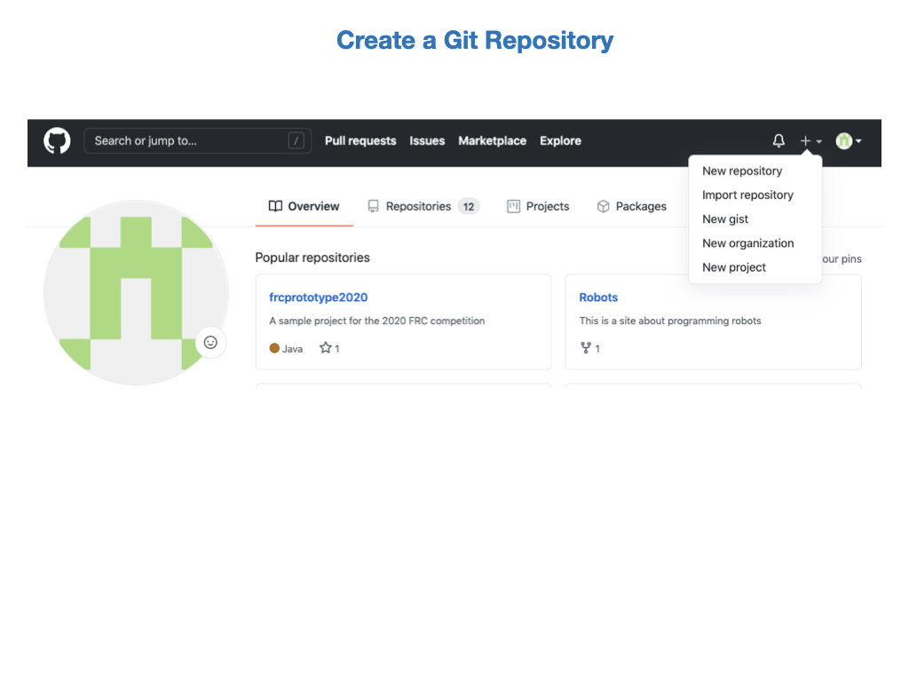Enter the repository name and a description. Select a Public repository.
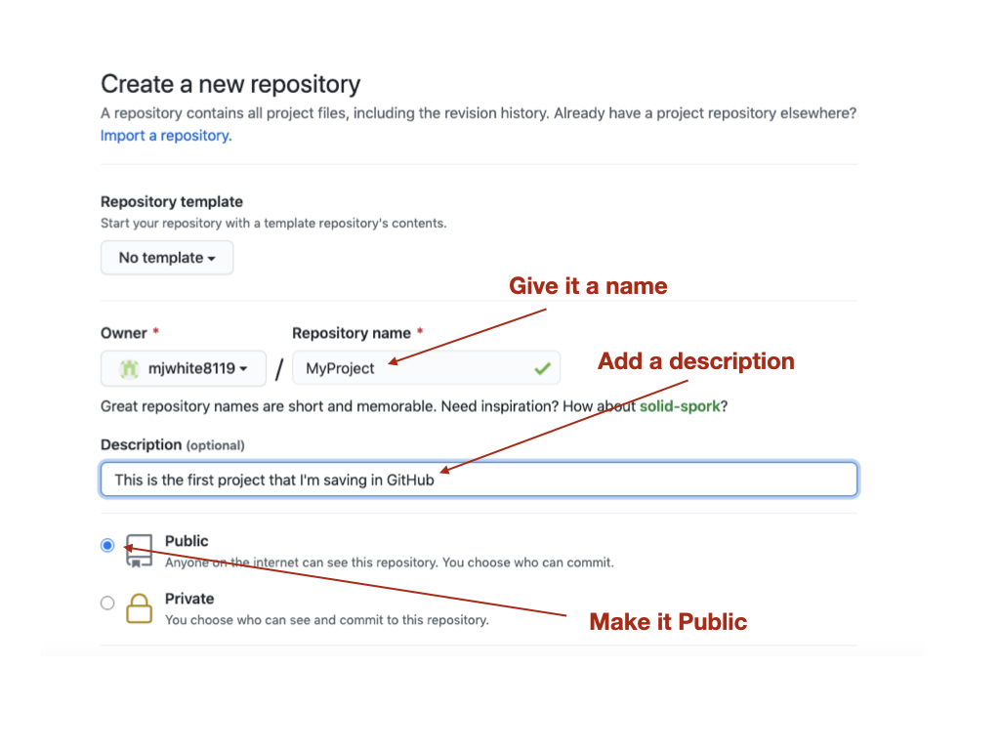Leave the add README and .gitignore unchecked. We’ll add these later. Click on “Create repository”.
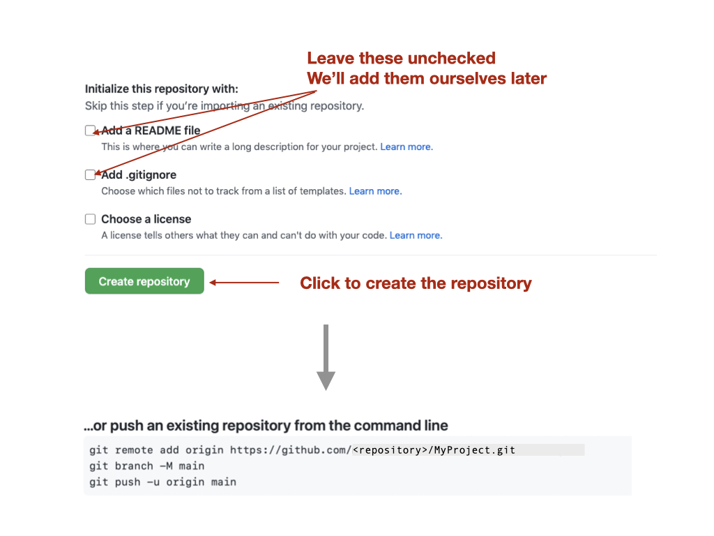We now have to connect our local Git repository with the remote GitHub repository. After the repository is created is displays the commands required to set your local repository to the remote. Copy and paste these commands one at a time into a terminal on your laptop and execute them. The <repository> part of the remote origin URL should be your Github account name.
Note
You may have to go to settings in VSCode and type git enable in the search bar. Make sure that git enable is checked.
git remote add origin https://github.com/HOTProgramming/MyProject.git
You can confirm the remote repository location by typing:
git remote -v
And now we can push our code to the remote GitHub repository:
git push -u origin main
And you should see a response similar to this:
Enumerating objects: 4, done.
Counting objects: 100% (4/4), done.
Delta compression using up to 8 threads
Compressing objects: 100% (2/2), done.
Writing objects: 100% (4/4), 383 bytes | 383.00 KiB/s, done.
Total 4 (delta 0), reused 0 (delta 0)
To https://github.com/HOTProgramming/MyProject.git
* [new branch] master -> master
Branch 'master' set up to track remote branch 'master' from 'origin'.
VS Code
You can setup VSCode to push to a remote repository using the following steps. Click on options and select Add Remote. Get the URL from your GitHub repository and paste it in, then press enter. You’ll be asked to name the remote, call it origin. You can then click on Publish Branch to update the remote repository.
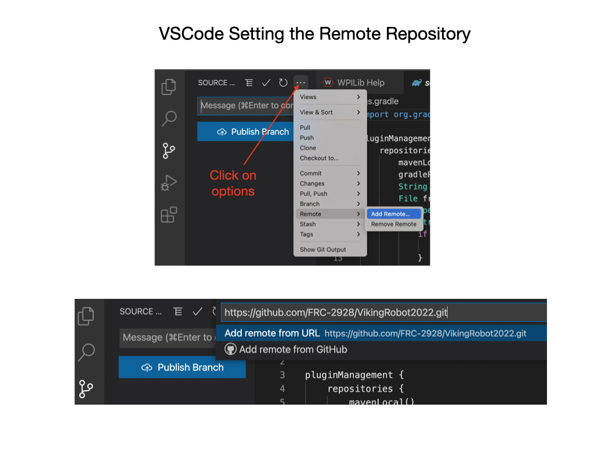Cloning a Repository
VS Code
The primary reason for creating repositories is so that other people can view and edit your code. The way we do that is to clone the repository. You first need to get the URL of the repository that you want to clone.
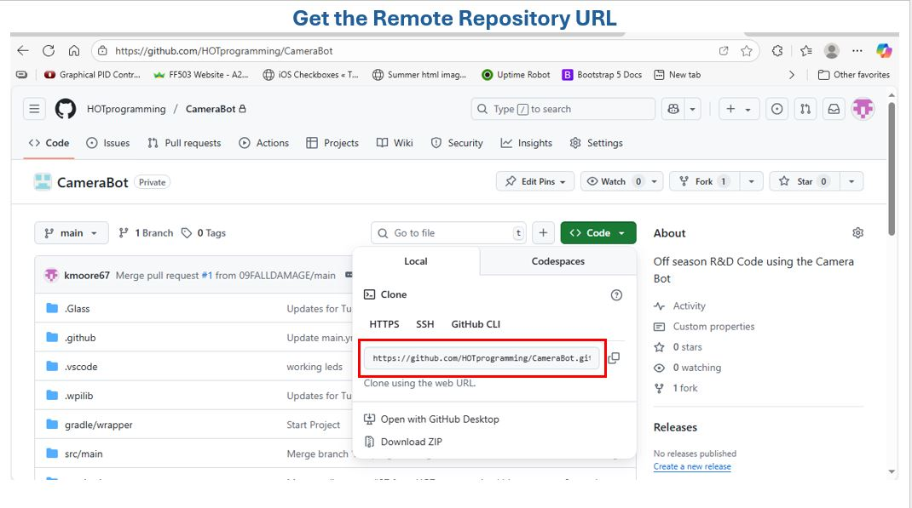Then in VSCode, select File->New Window and click on the Github icon. Click Clone Repository and enter the repository URL that you just copied. You’ll be asked to select a local folder in which to save the cloned repository. The repository will download from Github and you can now open it.
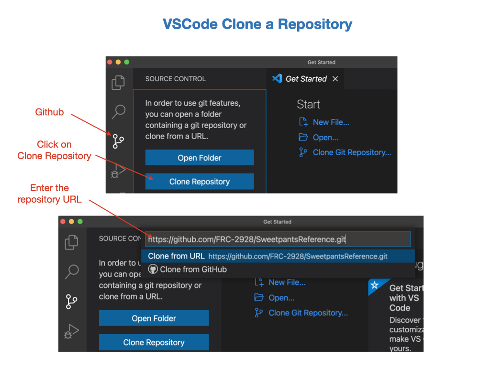Conceptually, this looks like the following:
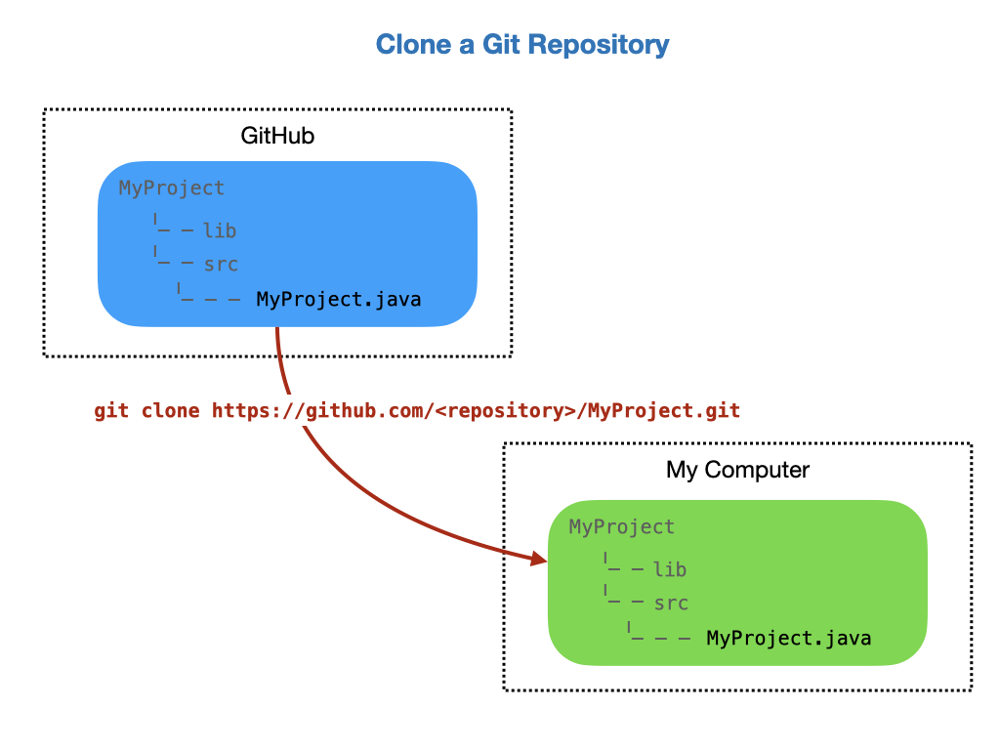Command Line
You can do this from the command line if you prefer. Create a local directory in which to store the repository and change into that directory:
mkdir C:/Projects/MyClonedProject
cd c:/Projects/MyClonedProject
Then clone the repository:
git clone https://github.com/HOTProgramming/MyProject.git
and the respone:
Cloning into 'MyProject'...
remote: Enumerating objects: 6, done.
remote: Counting objects: 100% (6/6), done.
remote: Compressing objects: 100% (3/3), done.
remote: Total 6 (delta 0), reused 6 (delta 0), pack-reused 0
Unpacking objects: 100% (6/6), done.
The output will tell you how many file objects have been downloaded.
Forking a Repository
A fork is a new repository that shares code and visibility settings with the original “upstream” repository. The term “upstream” just means the original Github repository. In most cases you may not have write access to the original repository, so this is useful if you want to update the code and try out ideas without effecting the original repository. To fork a repository navigate to the Github repository that you want to fork and click the Fork button. On the next screen, select your own Github account as the destination of the fork. You can keep the same repository name or use a different name. Click “Create Fork” to copy the repository. You should now have a copy of the repository in your own account.
Note
When you Clone a repository you are making a copy of the repoitory on your local machine. When you Fork a repository, you are copying a repository to a new account in GITHUB!
Branching
When you want to add new features to the code base it’s a good idea to create a new branch. A new branch can be created from VSCode as shown in the following graphic. Once the branch is created you’ll be switched over to that branch automatically and you can start making changes. You can give the branch any name you want, but it should be somewhat descriptive of the new feature.
Important
For our team the branch name will be feature-<new-feature>, where new-feature is somewhat descriptive of what needs to be added. (For example: feature-intake or feature-lights, or feature-shooter)

You’ll be prompted to publish the branch to GitHub. You can do this immediatelly or after you have made some changes. To delete a remote branch use git branch -d <branch name>
Pull Requests
Pull requests asks the owner of the repository to pull in your requested changes. (i.e. commits) It lets you tell others about changes you’ve pushed to a branch in a repository on GitHub. Once a pull request is opened, you can discuss and review the potential changes with collaborators and add follow-up commits before your changes are merged into the base branch.
In order to add new features to the existing code base you need to create a new branch. For our team the branch name will be `feature-<new-feature>`, where new-feature is somewhat descriptive of what needs to be added. You can now add your new feature and possibly test it out on the robot. Since your branch was created from the main branch you should have the basic functionality to test is on a robot.
Once you have created the branch and added your new feature you can merge it back into the main branch by creating a Pull Request. See Creating a pull request in the GitHub documentation.
The Pull Request will be reviewed by the repository owner, and if everything looks good it will be merged into the main branch of the code. See Merging a pull request in the GitHub documentation. The Pull Request process is shown below.
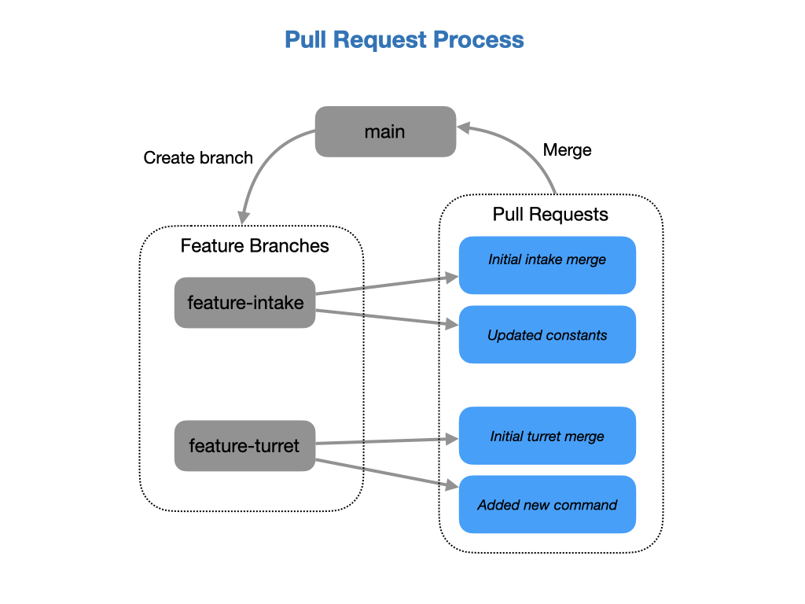You can link a pull request to an issue.
When thinking about branches, remember that the base branch is where changes should be applied, the head branch contains what you would like to be applied.
Merging and Merge Conflicts
TODO
Special Git Files
The README.md File
- A GitHub README is a file, typically named README.md, that provides documentation and information about a repository or a user’s profile on GitHub. It is written using Markdown, which allows for rich text formatting, including headings, lists, links, images, and code blocks. Here is a Markdown guide to help explain what the Markdown syntax is Typically, a README file contains the following:
What the project is and what it does.
How to install and use the project.
Instructions for contributing to the project.
Licensing information.
Contact information or links to further resources.
For our team projects, at the very minimum the readme must include a description of what the repository is. Here is an example template for a README file
The .gitignore File
A .gitignore file is a plain text file in a Git repository that specifies files and directories that Git should ignore and not track. This means that any files or directories listed in the .gitignore file will not be included when you commit changes to your repository, nor will they be pushed to a remote repository like GitHub.
- It helps keep your repository clean by preventing the tracking of files that are not essential to the project’s source code, such as:
Compiled binaries and build artifacts (e.g., .exe, .o, target/)
Temporary files and log files (e.g., .tmp, .log)
Dependency caches (e.g., node_modules/, vendor/)
Hidden system files (e.g., .DS_Store)
Personal IDE configuration files
- Preventing Exposure of Sensitive Data:
It’s crucial for keeping sensitive information like API keys, credentials, or personal notes out of public repositories.
- Maintaining Consistency:
It helps ensure that different developers working on the same project have consistent environments by ignoring local-specific files that shouldn’t be shared.
- How it Works:
The .gitignore file is typically located at the root level of your Git repository. Each line in the file represents a pattern for files or directories to ignore. Patterns can include wildcards, directory separators, and negation (!) to define specific rules for ignoring or re-including files.
Important
If a file has already been committed and tracked by Git, adding it to .gitignore will not automatically remove it from the repository. You would need to explicitly remove it from Git’s tracking using git rm –cached <filename> before the .gitignore rule takes effect.
Advanced Options
Changing the Remote Repository Origin
In some cases you might want to change to remote origin of a repository. To do this follow these steps:
From VSCode open a New Terminal and execute the following command. Where <repository> is you own repository account name, and <MyProject> is the name of your local project.
git remote set-url origin https://github.com/<repository>/<MyProject>.git
Type in:
git remote -v
to check that the remote repository has changed to your account.
Push the code to new Github repository origin by executing the following command in the terminal:
git push -u origin main
Check your Github repository to ensure that the new code has been pushed.
Lab - Git Repository and GitHub
Clone a repository.
Create a feature branch and commit some changes.
Create a pull request.
Merge the pull request.
References
FRC Documentation - Git Version Control
GitHub - Creating a pull request
YouTube video - VSCode and Github